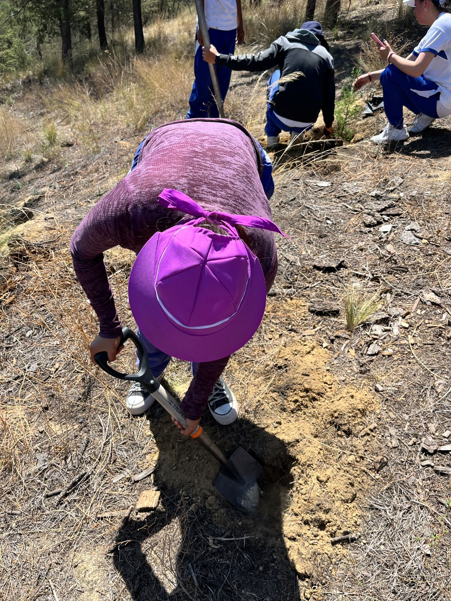
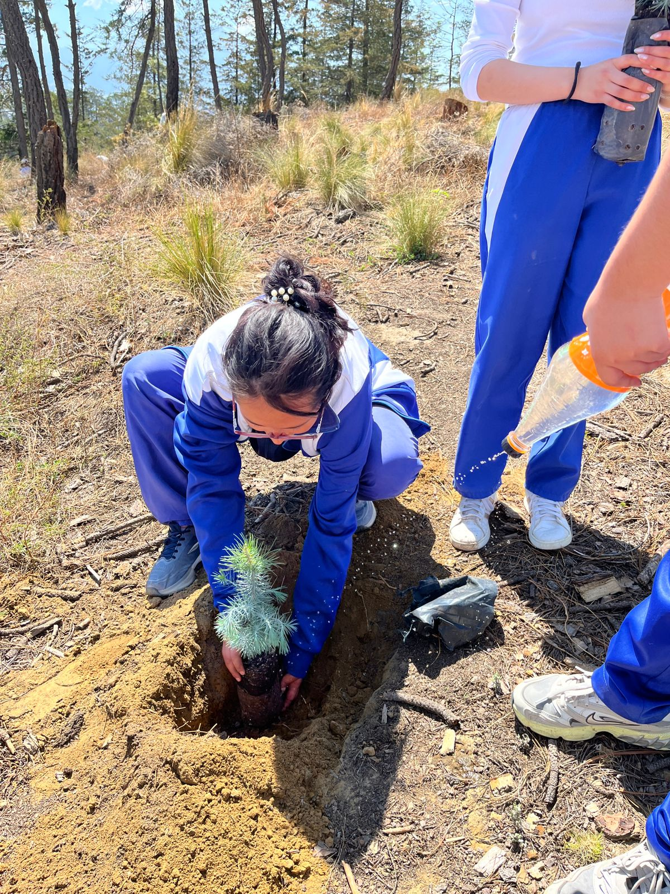
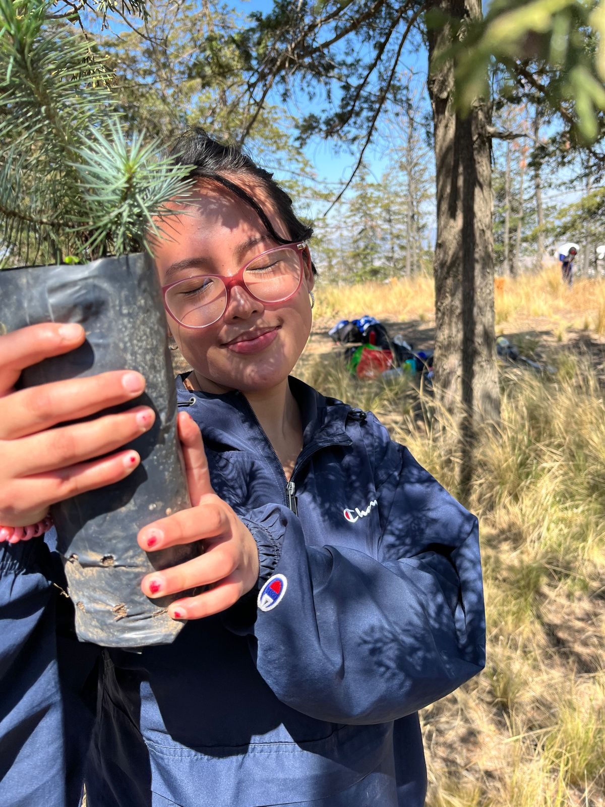
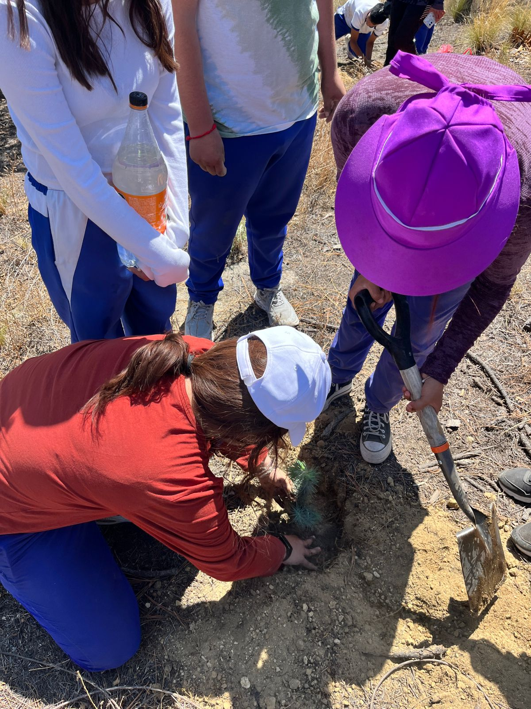
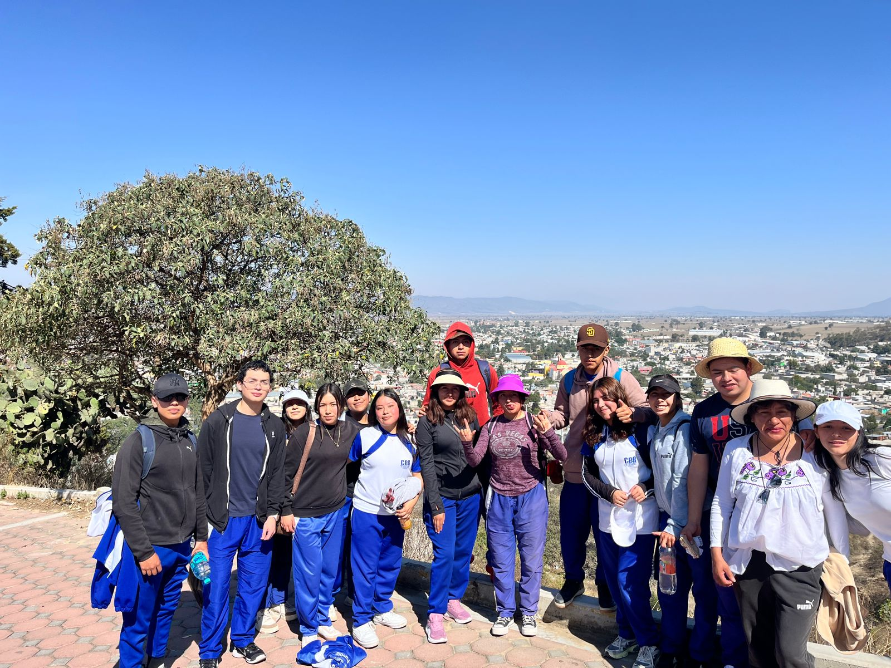
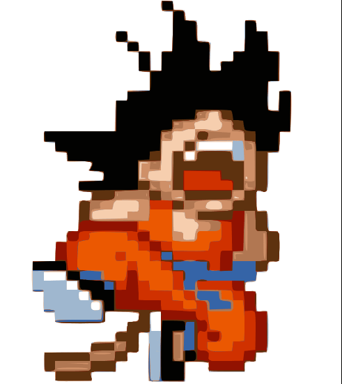
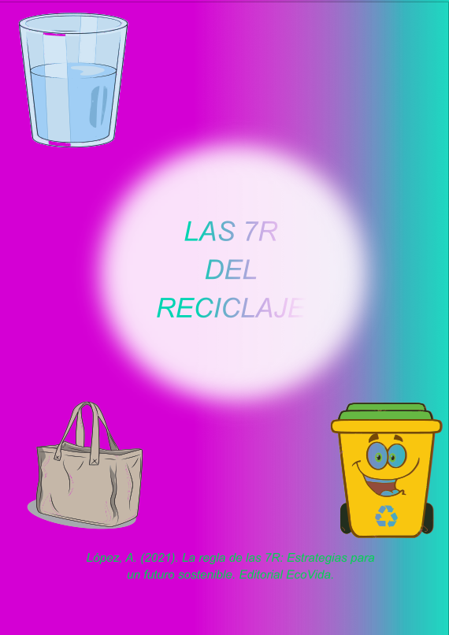

En nuestra escuela, como parte del compromiso ambiental, participamos en un proyecto de reforestación en un cerro cercano a Ciudad Serdán. Este proyecto no solo ayudó a recuperar áreas verdes, sino que también fue una oportunidad para aplicar los principios de las 7R, promoviendo la sostenibilidad en cada paso.

Reducir: Usamos solo el agua necesaria y herramientas compartidas para evitar desperdicios.

Reutilizar: Se reutilizaron botellas como regaderas para las plantas jóvenes.

Reciclar: Se recolectaron residuos durante la jornada para su reciclaje posterior.

Reparar: Se repararon palas y picos viejos para usarlos en la plantación.

Recuperar: Se recuperaron semillas nativas que fueron plantadas para conservar la biodiversidad local.

Rechazar: No se permitió el uso de plásticos de un solo uso durante la actividad.
Repensar: Reflexionamos sobre cómo nuestras acciones afectan el medio ambiente y la importancia de actuar en comunidad.

Si no cumples las 7R, Goku chiquito llora 😢
